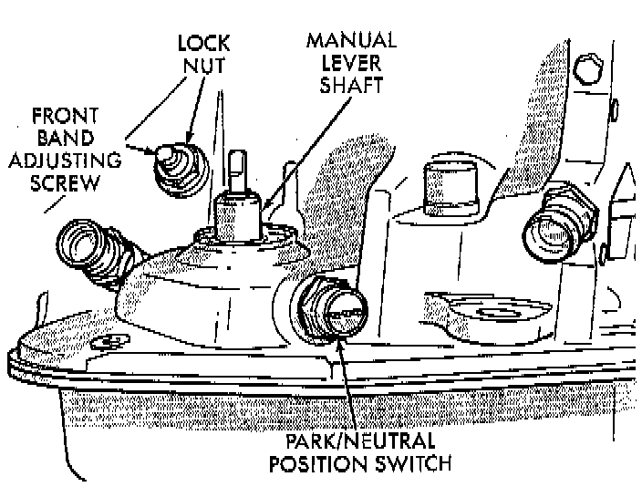
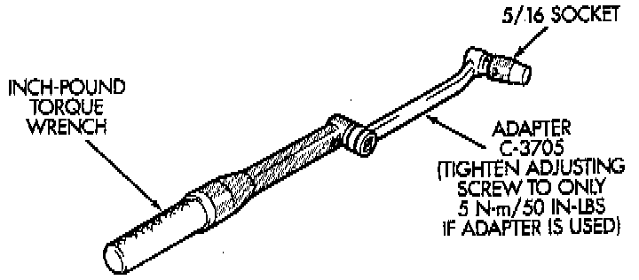
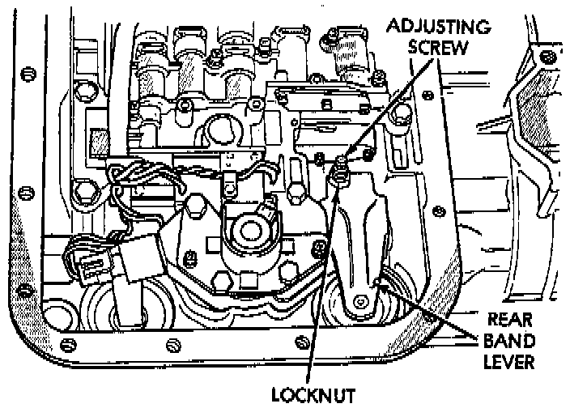

Band: Adjustments
FRONT BAND ADJUSTMENTThe front (kickdown) band adjusting screw is located on the left side of the transmission case above the manual valve and throttle valve levers.
1. Raise vehicle.

2. Loosen band adjusting screw locknut. Then back locknut off 3-5 turns. BE sure adjusting screw turns freely in case. Apply lubricant to screw threads if necessary.
3. Tighten band adjusting screw to 8 Nm (72 inch lbs.) torque with Inch Pound Torque Wrench C-3380-A, a 3-inch extension and 5/16 socket.
- Back off front band adjusting screw 3-5/8 turns.
- Hold adjuster screw in position and tighten locknut to 41 Nm (30 ft. lbs.) torque.

CAUTION: If Adapter C-3705 is needed to reach the adjusting screw, tighten the screw to only 5 Nm (47 - 50 inch lbs.) torque.
4. Lower vehicle.

REAR BAND ADJUSTMENT
The transmission oil pan must be removed for access to the rear band adjusting screw.
1. Raise vehicle.
2. Remove transmission oil pan and drain fluid.
3. Loosen band adjusting screw locknut 5-6 turns. Be sure adjusting screw turns freely in lever.
4. Tighten adjusting screw to 8 Nm (72 inch lbs.) torque.
- Back off adjusting screw 4 turns.
- Hold adjusting screw in place and tighten locknut to 34 Nm (25 ft. lbs.) torque.
5. Position new gasket on oil pan and install pan on transmission. Tighten pan bolts to 17 Nm (13 ft. lbs.) torque.
6. Lower vehicle and refill transmission with MOPAR atf plus 4, Type 9602 fluid.